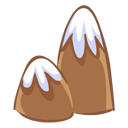

VOLCANES
¿Qué es un Volcan?
Es un lugar donde salen materiales calientes(lava, ceniza, rocas, gases, vapores) de interior de la Tierra. Parte de estos materiales seacumulan alrededor del lugar de salida, formando cerros o montañas que llegan a alcanzar grandes alturas.
Los materiales calientes pueden salir pro grietas o por el cráter, que es un orificio en la parte superior del cerro o montaña volciánica, formado por eruopciones anteriores.
Partes de un Volcan
CRÁTER
Es la puerta de salida de los materiales del volcán. es la abertura que está al final de la chimenea, el cráter puede ser de forma circular, ovalado, etc.CHIMENEA
Es en conducto por donde sale el magma hacia al exteriorCONO VOLCÁNICO
Parte del volcán formada por los materiales que expulsados, tiene forma de cono.CÁMARA MAGMÁTICA
Lugar donde esta acumulado el magma antes de salirFUMAROLAS
Son emisiones de gases de las lavas en los cráteres.SOLFATARAS
Son emisiones de vapor de agua y ácido sulfhídrico.MOFETAS
Son fumarolas frías que desprenden dióxido de carbonoGÉISERES
Son pequeños volcanes de vapor de agua hirviendo
Tipos de Volcanes
Los volcanes se clasifican atendiendo al tipo de erupción que presentan:
Tipo Hawaiano
Son volcanes de erupción tranquila, debido a que la lava es muy fluida. Los gases se desprenden fácilmente y no se producen explosiones. El volcán que se forma tiene apariencia de escudo, ya que la lava, al ser muy fluida cubre una gran extensión antes de solidificarse.Tipo Estromboliano
Son volcanes con erupciones violentas. La lava es viscosa, no se desliza fácilmente y forma pequeños conos volcánicos donde se producen explosiones con lanzamiento de lapilli y cenizas volcánicas. Las lavas pueden recorrer 12 km antes de solidificarse.Tipo Vulcaniano o Vesubiano
Son volcanes con erupciones muy violentas. Las lavas son muy viscosas y se solidifican en la zona del cráter, produciéndose explosiones que, incluso, llegan a demoler la parte superior del cono volcánico.Tipo Peleano
Volcanes con erupciones extremadamente violentas. La lava tiene una altísima viscosidad. Por ello, la chimenea del volcán se obstruye al solidificarse la lava. Los gases se acumulan en la cámara magmática, incrementando la presión, por lo que termina explotando todo el aparato volcánico. El más famoso de estos volcanes fue el situado en la isla de Krakatoa. Esta isla casi desapareció después de la erupción del volcán.Tipos de erupciones volcánicas
La temperatura, composición, viscosidad y elementos disueltos en el magma son los factores que determinan el tipo de erupción y la cantidad de productos volátiles que la acompañan.Hawaiana
En este tipo de erupción, la lava generalmente es bastante fluida y no ocurren desprendimientos gaseosos explosivos. Estas lavas se desbordan cuando rebasan el cráter y se deslizan con facilidad por la ladera del volcán, formando verdaderas corrientes que recorren grandes distancias. Por esta razón, los volcanes de tipo hawaiano son de pendiente suave. Algunos residuos de lava, al ser arrastrados por el viento, forman hilos cristalinos que los nativos hawaianos llaman cabellos de la diosa Pelé, la diosa del fuego. El volcán hawaiano más famoso es el Kilauea.Estromboliana o mixta
Este tipo de erupción recibe el nombre del Estrómboli, volcán de las islas Eolias (mar Tirreno), al norte de Sicilia. Se origina cuando hay alternancia de los materiales en erupción, formándose un cono estratificado en capas de lavas fluidas y materiales sólidos. La lava es fluida, desprende gases abundantes y violentos con proyecciones de escorias, bombas y lapilli. Debido a que los gases pueden desprenderse con facilidad, no se producen pulverizaciones o cenizas. Cuando la lava rebosa por los bordes del cráter, desciende por las laderas y barrancos, pero no alcanza grandes extensiones como en las erupciones de tipo hawaiano.Vulcaniana
Del nombre del volcán Vulcano en las islas Lipari. Esta erupción se caracteriza porque en ella se desprenden grandes cantidades de gases, la lava liberada es poco fluida y se consolida con rapidez. En este tipo de erupción, las explosiones son muy fuertes y pulverizan la lava, produciendo mucha ceniza, la cual es lanzada al aire acompañada de otros materiales fragmentarios. Cuando el magma sale al exterior en forma de lava, se solidifica rápidamente, pero los gases que se desprenden rompen y resquebrajan su superficie, volviéndola áspera y muy irregular y formando lava de tipo Aa. Los conos de estos volcanes son de pendiente muy inclinadaPliniana o vesubiana
Nombrada así en honor a Plinio el Joven, difiere de la erupción vulcaniana en que en ésta la presión de los gases es muy fuerte y produce explosiones muy violentas. Forma nubes ardientes que, al enfriarse, generan precipitaciones de cenizas, las cuales pueden llegar a sepultar ciudades, como ocurrió con Pompeya y Herculano por la actividad del volcán Vesubio.Se caracteriza por alternar erupciones de piroclasto con erupciones de coladas lávicas, dando lugar a una superposición en estratos, lo que hace que este tipo de volcanes alcancen grandes dimensiones. Otros volcanes de tipo pliniano son el Teide, el Popocatépetl y el Fujiyama.
Freatomagmática o surtseyana
Los volcanes de tipo freato-magmático se encuentran en aguas someras, presentan un lago en el interior de su cráter y en ocasiones forman atolones. Sus erupciones son extraordinariamente violentas, ya que a la energía propia del volcán se le suma la expansión del vapor de agua súbitamente calentado. Normalmente no presentan emisiones lávicas ni extrusiones de rocas. Algunas de las mayores erupciones freáticas son las del Krakatoa, el Kīlauea y la Isla de Surtsey.Peleana
De los volcanes de las Antillas es célebre la Montaña Pelada, ubicada en la isla Martinica, que en la erupción de 1902 destruyó la capital, Saint-Pierre.La lava en esta erupción es extremadamente viscosa y se consolida con gran rapidez, llegando a tapar por completo el cráter formando un pitón o aguja. La enorme presión de los gases sin salida provoca una enorme explosión que levanta el pitón, o bien destroza la parte superior de la ladera. Así ocurrió el 8 de mayo de 1902, cuando las paredes del volcán cedieron a tan enorme empuje que se abrió un conducto por el que salieron con extraordinaria fuerza los gases acumulados a elevada temperatura y que, mezclados con cenizas, formaron una nube ardiente que ocasionó 28 000 víctimas.
Erupciones submarinas
En el fondo oceánico se producen erupciones volcánicas cuyas lavas pueden formar islas volcánicas si llegan a la superficie. Las erupciones suelen ser de corta duración en la mayoría de los casos, debido al equilibrio isostático de las lavas al enfriarse cuando entran en contacto con el agua y también por la erosión marina. Algunas islas como las Cícladas en Grecia o Las Islas Canarias en España tienen este origen.Avalanchas de origen volcánico
Hay volcanes que generan un número de víctimas elevado, debido a que sus grandes cráteres están durante el periodo de reposo convertidos en lagos o cubiertos de nieve. Al recobrar su actividad, el agua mezclada con cenizas y otros restos, es lanzada formando torrentes y avalanchas de barro que tienen una enorme capacidad destructiva. Un ejemplo de esto fue la erupción del Nevado de Ruiz en Colombia, el 13 de noviembre de 1985. El Nevado del Ruiz es un volcán explosivo en el que la cumbre del cráter (5321 msnm) estaba recubierta por un casquete de hielo; al ascender la lava se recalentaron las capas de hielo y se formaron unas coladas de barro que invadieron el valle del río Lagunilla, sepultando la ciudad de Armero, dejando 24 000 muertos y decenas de miles de heridosErupciones fisurales
Se originan en una larga dislocación de la corteza terrestre, que puede ser desde apenas unos metros hasta varios kilómetros. La lava que fluye a lo largo de la rotura es fluida y recorre grandes extensiones formando amplias mesetas, con 1 o más kilómetros de espesor y miles de km. Un ejemplo de vulcanismo fisural es la meseta del Decán en la India.
